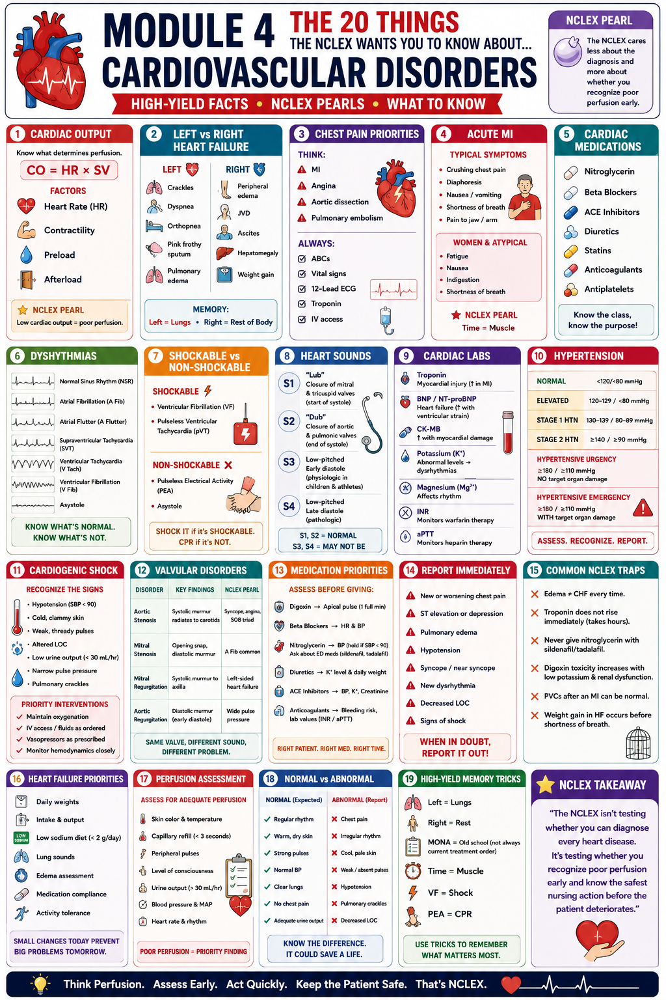
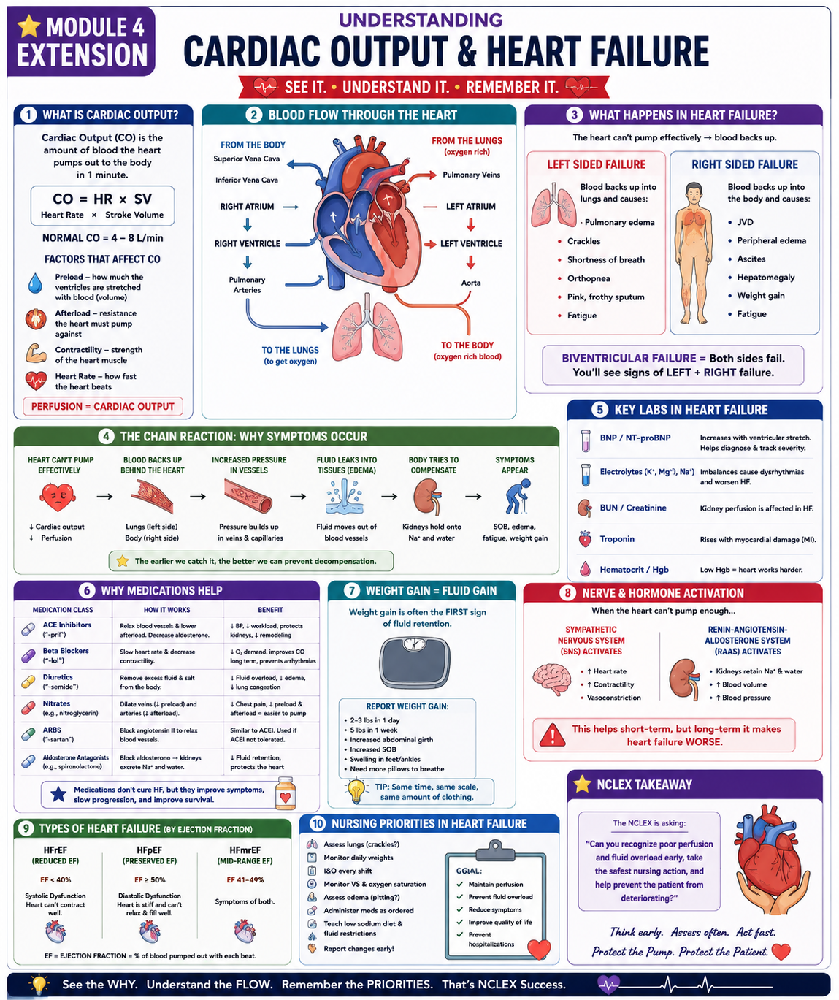

Think Perfusion. Assess Early. Act Quickly. Keep the Patient Safe.
Phase 1 · FoundationsWhy this module matters: Cardiovascular questions are woven throughout NCLEX. You must recognize poor perfusion early, know the difference between left and right heart failure, identify shockable rhythms, and know the safest nursing action before the patient deteriorates. The NCLEX isn't testing whether you can diagnose every heart disease — it's testing whether you can recognize the danger and act.
Cardiovascular is consistently one of the highest-yield content areas across NCLEX. Questions appear in physiological adaptation, pharmacology, and reduction of risk.
CO = HR × Stroke Volume. Everything else flows from this formula.
Left = Lungs (crackles, SOB). Right = Rest of body (edema, JVD).
VF and pulseless VT = SHOCK IT. PEA + Asystole = CPR only.
Time = Muscle. MONA (not always current) → ABCs, 12-lead, troponin, IV access.
Know the class, know the purpose, know when to HOLD.
↓ CO → cold/clammy skin, ↓ UO, altered LOC, narrow pulse pressure.
MAIN INFOGRAPHIC — Study for 2–3 minutes before the deep dive

EXTENSION — Cardiac Output & Heart Failure Deep Dive

Cardiac Output = Heart Rate × Stroke Volume | Normal: 4–8 L/min
4 Factors That Affect CO:
| Feature | Left-Sided HF | Right-Sided HF |
|---|---|---|
| Mechanism | LV can't pump → blood backs up into lungs | RV can't pump → blood backs up into body |
| Key Signs | Crackles, dyspnea, orthopnea, pink frothy sputum, pulmonary edema | JVD, peripheral edema, ascites, hepatomegaly, weight gain |
| Position | HOB elevated (easier to breathe) | Legs elevated (if no pulmonary edema) |
| Priority Assessment | Lung sounds, O₂ sat, RR | Daily weights, I&O, edema assessment |
| Common Cause | HTN, MI, aortic stenosis | Left HF (most common), COPD, pulmonary HTN |
| Classification | BP Reading | Nursing Action |
|---|---|---|
| Normal | <120/<80 mmHg | Maintain healthy lifestyle; recheck per guidelines |
| Elevated | 120–129/<80 mmHg | Lifestyle modifications; no medication yet |
| Stage 1 HTN | 130–139/80–89 mmHg | Lifestyle + medication if 10-year CVD risk ≥10% |
| Stage 2 HTN | ≥140/≥90 mmHg | 2-drug combination + lifestyle |
| Hypertensive URGENCY | ≥180/≥110 mmHg — NO organ damage | Oral antihypertensives, gradual reduction over hours-days; may treat outpatient |
| Hypertensive EMERGENCY | ≥180/≥110 mmHg — WITH target organ damage | 🚨 ICU admission · IV antihypertensives (nicardipine, labetalol) · Reduce MAP by ≤25% in first hour — NOT to normal (can cause ischemia) |
| Disorder | Key Findings | Murmur Type | NCLEX Pearl |
|---|---|---|---|
| Aortic Stenosis | Systolic murmur radiating to carotids; syncope, angina, SOB triad | Systolic (crescendo-decrescendo) | Syncope + angina + SOB = severe AS — surgical priority. Classic triad = death sentence without valve replacement. |
| Mitral Stenosis | Opening snap + diastolic murmur; A-fib common; dyspnea | Diastolic (opening snap) | A-fib is common → anticoagulation needed. Rheumatic fever most common cause. |
| Mitral Regurgitation | Systolic murmur radiating to axilla; left-sided HF signs | Systolic (holosystolic) | Leads to left heart failure. Harsh holosystolic murmur at apex → axilla. |
| Aortic Regurgitation | Diastolic murmur; wide pulse pressure; bounding pulses | Diastolic (early) | Wide pulse pressure is hallmark. Can lead to left HF. |
| Lab | What It Measures | Clinical Meaning | NCLEX Action |
|---|---|---|---|
| Troponin (I or T) | Myocardial injury marker | Rises 3–6 hrs after MI, peaks 24 hrs, normalizes 7–10 days. Most specific for MI. | Serial troponins q6h × 3. Does NOT rise immediately — NCLEX trap: initial troponin can be normal in early MI. |
| BNP / NT-proBNP | Ventricular stretch / strain | ↑ in heart failure. Used to diagnose HF and monitor treatment response. | BNP >100 pg/mL = likely HF. Trend values to assess therapy effectiveness. |
| CK-MB | Cardiac isoenzyme | Rises 4–6 hrs after MI; less specific than troponin but useful for re-infarction detection. | Older marker; troponin now preferred. Know for NCLEX recognition. |
| Potassium (K+) | Electrolyte balance | Abnormal K+ → dysrhythmias. Hypokalemia ↑ digoxin toxicity. Hyperkalemia → peaked T waves, V-fib risk. | Monitor K+ on all cardiac patients. Correct before giving digoxin. |
| Magnesium (Mg²+) | Cardiac rhythm stability | Low Mg = dysrhythmias; check alongside K+ (hypokalemia often accompanies hypomagnesemia) | Replace both K+ and Mg+ when low — you can't fix hypokalemia if Mg is low. |
| INR | Warfarin therapy monitoring | Therapeutic 2–3 (A-fib); 2.5–3.5 (mechanical valves) | Hold warfarin if INR supratherapeutic; notify provider. |
| aPTT | Heparin therapy monitoring | Therapeutic 60–100 sec (1.5–2.5× normal); normal aPTT = 25–35 sec | Check aPTT 6 hours after any heparin dose change. |
Left HF → fluid backs into the LUNGS (crackles, SOB, pink frothy sputum). Right HF → fluid backs into the REST of the body (JVD, peripheral edema, ascites, hepatomegaly).
VF + pVT = SHOCK IT (shockable). PEA + Asystole = CPR IT (not shockable). There are only 2 shockable rhythms. Everything else = CPR + epinephrine.
Every minute without reperfusion = more cardiomyocytes die. Door-to-balloon goal: <90 min for STEMI. Your job: 12-lead ECG within 10 minutes, activate the cath lab.
S3 = fluid overload/HF (abnormal in adults). S4 = stiff ventricle from HTN or MI (always pathologic). Hear S3 → think HF.
If HR ↓ or SV ↓ → CO ↓ → perfusion ↓. If CO is low, everything suffers: brain (LOC ↓), kidneys (UO ↓), skin (cold/clammy). These are your assessment targets.
Syncope · Angina · Shortness of breath. This classic triad in a patient with a systolic murmur radiating to the carotids = severe aortic stenosis → valve replacement needed.
For stable angina: SL nitro q5 min × 3 doses. If pain NOT relieved after 3 doses → call 911/provider immediately. HOLD nitro if SBP <90 OR patient took sildenafil/tadalafil within 24–48 hrs (severe hypotension).
Weight gain of 2–3 lbs in 1 day or 5 lbs in 1 week = fluid retention → call provider. Same time, same scale, same amount of clothing. This is the earliest sign of worsening HF.
After an MI: serial troponins, continuous cardiac monitoring, watch for extension of infarct (new ST changes), arrhythmias (most common cause of death post-MI = V-fib), cardiogenic shock signs (↓BP, ↓UO, altered LOC). Beta-blockers and ACE inhibitors reduce mortality post-MI.
Furosemide → ↓ K+ → potentiates digoxin toxicity. Always check K+ and replace. Daily weights are mandatory. Fluid restriction + low-sodium diet. Watch for orthostatic hypotension (fall risk after diuretics).
Avoid MRI (unless MRI-conditional device). No strong magnets near device. Assess pacemaker function: is it capturing (each pacer spike followed by a complex)? Pacemaker syndrome: dizziness, fatigue, palpitations = device may need adjustment.
Irregularly irregular rhythm, no distinct P waves. High stroke risk — anticoagulation is key. Rate control with beta-blockers/CCBs. Rhythm control with amiodarone. Cardioversion possible but must rule out atrial clot first (TEE or 3 weeks of anticoagulation).
If you hear an S3 in an adult with dyspnea, crackles, and peripheral edema → HF until proven otherwise. If you hear a systolic murmur radiating to carotids with syncope + angina → aortic stenosis → do NOT exercise this patient, prepare for valve replacement discussion.
Identify gaps and fill them in.
Write the CO formula and calculate: HR = 72, SV = 70 mL
List 4 factors that affect cardiac output:
Without looking, list 3 signs of each:
Left HF (Lungs):
Right HF (Rest of Body):
List the 2 shockable rhythms and 2 non-shockable rhythms and the intervention for each:
Shockable (Defibrillate):
Non-Shockable (CPR + Epi):
Write the hold parameter for each drug:
Digoxin:
Metoprolol:
Nitroglycerin:
Furosemide:
List 4 atypical MI symptoms and name two populations most likely to present atypically: